The Avnet Virtex-II Development Platform uses the SystemACE MPM storage solution, instead of proms to store the Virtex-II’s configuration files. The MPM solution consists of an 18V01 prom, Virtex-E 50, and a 64Mbit AMD flash device.
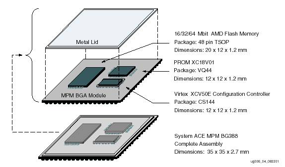
Please see http://www.xilinx.com/isp/systemace/systemacempm.htm for more information on the SystemACE MPM.
Prior to performing this step, bit files must have been created for each design using the CCLK option.
Start File Generation Mode of iMPACT by either
1. Selecting “Prepare Configuration Files” when launching iMPACT.
or
2. Use “Mode” pull-down or icon. Right-click white space to start wizard.
a.
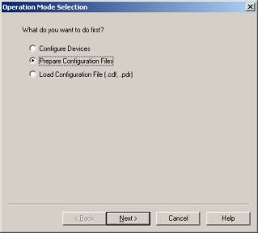
b.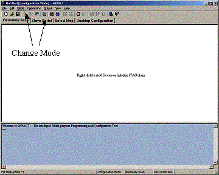
Figure 1 File Generation Mode
Select “SystemACE File” and click Next.
Select “SystemACE MPM/SC” and click Next.
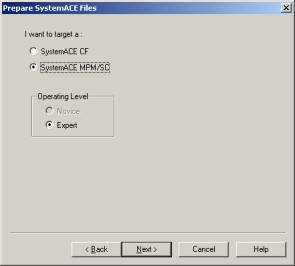
Select size of 64 Mbits and click Next.
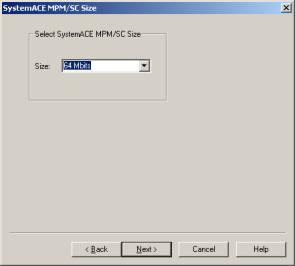
Give the file a name, and specify the desired location.
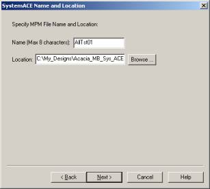
Select the desired mode (our example uses Slave Serial).
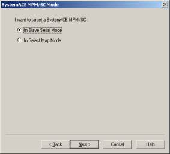
Select number of chains (our board has 1 chain, using data0).
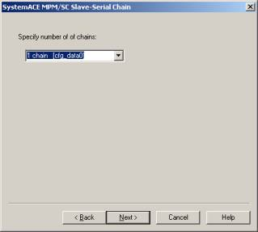
Select the number of design files that will be in the MPM file by checking the corresponding box. Note that for each design, you will be asked for a bit file later in this process. For each chain (our example uses 1 chain), you may have multiple design files (our ex. uses 5 design files) that can be loaded. These are jumper selectable on our board using JP103 and correspond to the Configuration Addr. In the example below, if the “dipled” file were desired, JP103 would be set to 2 (shunt on pins 3-4).
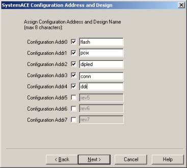
After clicking Next, a file generation summary will be presented. If all is satisfactory, press Next to continue. The example below indicates that our MPM file will have 5 designs (we will provide a bit file for each) and load via Slave-Serial mode with data0.
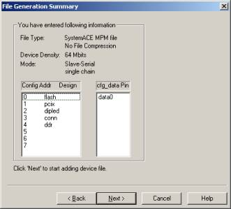
When prompted for a design file for config address 0, add the first bit bit file. The tool will ask if another file is to be added to config address 0. Select No. The tool will then move on to config address 1. Add the second bit file. Continue until a bit file has been assigned to each config address. Note that these bit files should have been previously built using the CCLK option.
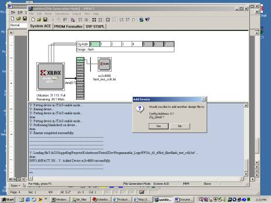
In our case, the total size of the file exceeded the capacity of the storage device. Note the utilization below at 155.57%. For this reason, we selected Compress file when prompted by the File Generation Option window.
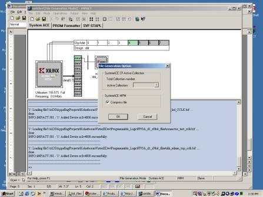
The SystemACE uses a 64Mbit flash device which must be erased prior to programming. To do so, iMPACT will issue an erase command to the flash, delay a given amount of time, and try to read back from the device to verify that it is blank (FF’s). There are cases where the tool does not wait long enough, and the device isn’t erased. It is recommended that a patch be installed in the Xilinx install directory as follows:
%XILINX%\acempm\data\impact.acd
Be sure to replace the one in the acempm directory!
This will replace the impact.acd file and extend the wait time for iMPACT from 2 to 3 minutes.
1. After initializing the jtag chain, right-click on the SystemACE device (2nd in the chain).
2. Select Erase.
3. The tool will seem to hang. It is actually waiting for the flash to erase. This should take approximately 3 minutes.
4. If the tool reports a successful erase, proceed to the programming section of this document.
When iMPACT fails to erase the device, it reports a “part is not blank” error. It will try again, but if it failed the first time, it is not going to pass on the second try. It is better to exit the tool completely and try again.
!Important! The following procedure assumes that the device was successfully erased prior to this step.
Initialize the jtag chain using iMPACT.
Right-click the xccace device (2nd device in the chain) and select Assign New Configuration File.
Note: You do not need to assign a file to the 18V01!
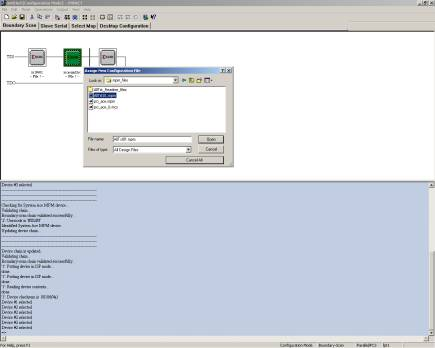
When prompted, select xccace64_bg388.
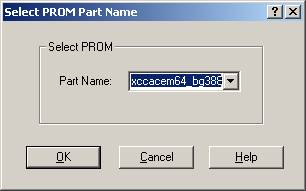
Impact will give the following warning. It is OK to ignore this. Click Yes to proceed.
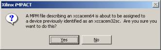
Right-click the xccace device and select program.
De-select Erase Before Programming. This should have been previously erased. If the device was not previously erased, the tool will proceed to program, but will not function properly (the FPGA won’t load).
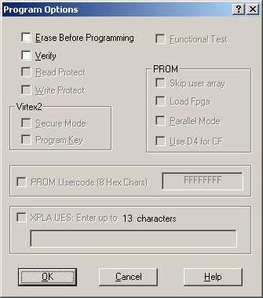
Click OK to continue.
After programming, remove power and select the desired design file using JP103.
Apply power. D3 should indicate a high on FPGA done.